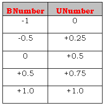

BNumbers are the standard number type that we apply to all Attributes. They are the number type you will use most often in scripting. However, there are some situations that call for different kinds of numbers, and so we also provide two other kinds of numbers: UNumbers, and regular Numbers.
How to Use BNumbers
As mentioned in Attributes, BNumbers are designed to put everything on a consistent scale. They make it possible for you to have Actors with all of their physical, emotional, and relationship Attributes—not to mention all the Props and Stages and their Attributes—behaving in ways that can be expressed in similar mathematical terms. Storyworlds are a simplified reflection of the real world, and we need some way to put dramatic concepts into terms the computer can understand. Basically, BNumbers allow you to compare apples to oranges and typhoid to hairnets. Though they can be a hassle to figure out when you first start using them, BNumbers solve the problem of how to juggle many different kinds of information within a single storyworld.
The primary BNumber Operators are BSum, BDifference, BProduct, BInverse, BAbsVal, and Blend. Understanding these six Operators will enable you to do most of what you will want to do in scripting. There are many other BNumber Operators in addition to these. You can download and view all SWAT Operators in Snips, Tips, and Tricks. Also, see Attributes for further detail on BNumbers.
Exercise 1: Using BNumber Operators
As we mentioned in earlier tutorials, BNumbers behave very differently from regular Numbers. If BNumbers are still giving you headaches, here is a simple set of exercises that can help you wrap your head around how they behave.
Go to any Inclination or Desirable script. Insert the BNumber Operator BSum in the following format:
BSum of:
Number1?
Number2?
In the script, set both Arguments to 0.0. Then open Scriptalyzer. Use the slider bars as follows.
a. Set Number1 to 0.0.
b. Write down the overall result you get for BSum when Number1 is 0.0 and Number2 is -0.99.
c. Write down the result when Number2 is 0.0.
d. Write down the result when Number2 +0.99.
e. Repeat a-d. with Number1 set to -0.99 and Number2 set first to -0.99, then 0.0, then +0.99. Write down the three different results.
f. Repeat a-d. with Number1 set at +0.99 and Number2 set first to -0.99, then 0.0, then +0.99. Write down the results.
Now do the exercises in a-f. above for BDifference, BProduct, BAbsVal, and Blend.
For BAbsval, you will only need one parameter: Number1 = -0.99, 0.0, and +0.99.
For Blend, you will have three Arguments, so you will need to run through a-f. three times. For the first run, start with a bias factor of -0.5 and do a-f. for the first two Arguments. Repeat this with a bias factor (third Argument) of 0.0. Then run it through a third time with a bias factor of +0.5.
This exercise may seem tedious, but I urge you to get a notepad and pencil and try it. Taking this systematic approach very quickly reveals the behavior of BNumbers in the wild and will save you time down the road.
How to Use UNumbers
UNumbers are a special version of BNumbers: they're BNumbers that are squashed into the range 0.0 to +1.0. Here's a table matching BNumbers to their UNumber equivalent:

A BNumber can be converted to a UNumber with the Operator BNumber2UNumber; a UNumber can be converted to a BNumber with the Operator UNumber2BNumber.
UNumbers have a variety of uses. For instance, they can be applied to situations in which you want a percentage scale of something. For example, suppose you want an Actor to spend some portion of his wealth on something. You can't use a BNumber to represent the percentage—after all, what does "-0.5 of your wealth" mean? So you convert the BNumber -0.5 to the UNumber +0.25 and now you can calculate with "25% of your wealth."
There's a simple rule of thumb for when to use BNumbers and UNumbers. If you're going to use BProduct, then you must use at least one UNumber. Using two BNumbers in BProduct will probably yield results that you don't want.
Exercise 2: Using UNumbers as Mediators
One common and extremely useful application of UNumbers is as a mediator of an effect. In the prior tutorial on Quantifiers, recall that we based Fred's inclination to apologize to Mary on how much he liked her—that is, his pNasty_Nice of her. But suppose we wanted to mediate his reaction to her with his volatility?
In other words, the more hot-headed Fred is, the more likely it is that he will react negatively to being scolded. The more cool his temperament is, the less likely he is to be swayed by emotion. So the new Inclination script for apologize would then look like this:
your first category: scold: scoldee: apologize
Inclination
BProduct of:
pNasty_Nice of:
ReactingActor
ThisSubject
BNumber2UNumber of:
Cool_Volatile of:
ReactingActor
Create this script and then test it in Scriptalyzer. First set an average Cool_Volatile for Fred (i.e., 0.0), using the Scriptalyzer slider. Now input a range of different pNasty_Nices, first low, then medium, then high.
Next, set a very high value of Fred's Cool_Volatile (say, 0.8), and then see what you get as a result with a low, medium, and high pNasty_Nice value.
Third, set a very low value (-0.8). Run through low, medium, and high values for Cool_Volatile.
What kind of results did you get for Fred's inclination to apologize when he was level-headed, versus when he was a hot-head?
Do you see how when Fred's Cool_Volatile is very low, his inclination to apologize to Mary does not change very much in either direction, no matter how much he likes or dislikes her? On the other hand, if he is a very sensitive soul who reacts strongly to emotionally charged events (i.e., his Cool_Volatile trait is very high), his decision on whether to apologize to Mary or not will swing widely, depending on how much he likes her.
This usage of UNumbers we call mediation. Whenever you want to mediate an Actor's response based on a particular Attribute (that is, if you envision that some of your characters will have a strong response to an Event, whereas others will have a weaker response, due to a difference in their personalities, for instance), convert the Attribute to a UNumber, and multiply it by the primary BNumber factor. In the example above, the primary factor is pNasty_Nice of ReactingActor for ThisSubject, and the mediating factor is Cool_Volatile of ReactingActor.
How to Use Numbers
We also use plain old everyday Numbers. You can convert a Number to a BNumber with the Operator Number2BNumber, and the other way with BNumber2Number. Here's another table showing the relationship between Numbers and BNumbers:
BNumbers and UNumbers are the same color, but regular Numbers are a slightly different color. That's because you can't use Numbers in the same places that you would use BNumbers, or vice versa. If you want to mix them, you have to use the conversion Operator, Number2BNumber. Here is an example:
Numbers include such things as tallies of how many Actors have performed a given Verb, for instance; counts of different sorts; or averages or totals of Attributes. You might use a Number in a script, such as CountEvents, to determine how many times ReactingActor has chosen a particular action to slowly decrease the Actor's likelihood of taking that action again. (This gives your Actors more varied sets of behavior over time.)
For instance, in the testing storyworld we created in the first set of tutorials, if you wanted your non-human Actor Tom to get tired of hitting and punching, and eventually go off and do something else, you could create a script that looks something like this:
your first category: punch: punchee: punch: Inclination:
BDifference of:
Fear_Anger of:
ReactingActor
Number2BNumber of:
CountEvents of:
MainClauseIs
ReactingActor
punch
ThisSubject
You would do the same thing for your first category: punch: punchee: hit with: Inclination, as well as both Options under your first category: hit with: hittee. Adding this clause enables Actors to grow bored of repeating the same behavior and try new things. (If you want Fred to grow bored more slowly, simply add a quotient:
You get similar basic arithmetic Operators for regular Numbers that you get for BNumbers: Sum, Difference, Product, AbsVal, Inverse, and so forth. See Snips, Tips, and Tricks for a full list of Operators and their functions.
PostScript: Crunching the (B-, U-, and Q-) Numbers
For the uber-geeks among us who need to work the numbers themselves to see how they work, Snips, Tips, and Tricks contains a downloadable file with the equations for:
* Converting a Number to a BNumber and vice versa;
* Converting a BNumber to a UNumber and vice versa;
* The primary BNumber Operators: BSum, and BDifference; and
* Converting BNumbers and UNumbers to a Quantifier and vice versa.